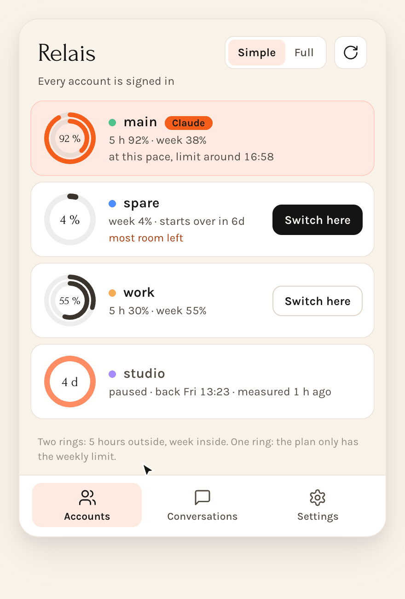
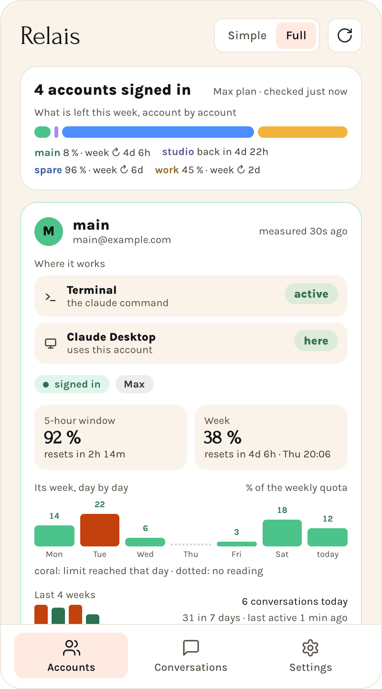
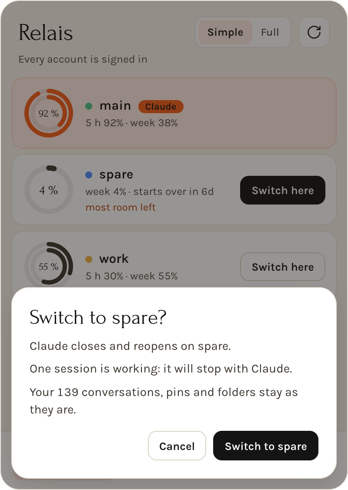
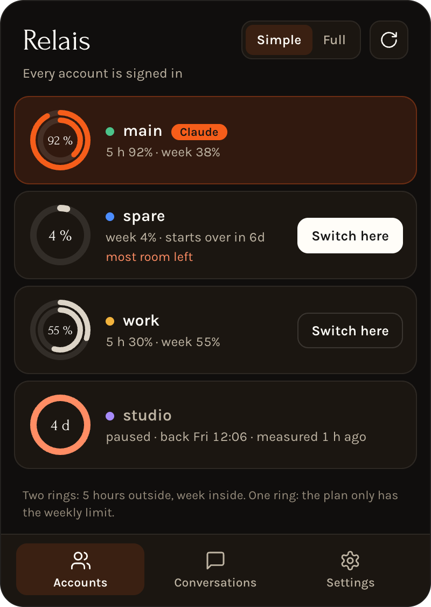

One workspace, several Claude accounts
Claude Desktop files your list under the signed-in account, so changing account normally changes everything you see. Relais keeps one workspace and changes only the sign-in.
- See which account has roomEvery account shows its 5-hour and weekly usage, and when it comes back.
- Click Switch hereRelais says what will happen and which sessions are still working.
- Pick up where you stoppedDesktop reopens on the new account, new terminals follow.

Simple when you switch, complete when you look
One toggle goes from a line per account to everything about each.

Claude usage limits at a glance
Five-hour and weekly limits for every account, a forecast at your current pace, and an alert before you hit the wall.

You decide, always
Relais marks the account that will last the longest and can wait for your sessions to finish. It never switches on its own, and what a switch stopped is one click from running again.

Made for the menu bar
Your limits stay in the menu bar and in a widget, one shortcut from the panel, in light and dark, in English and French.
Your credentials stay with Anthropic
Relais never reads, copies, refreshes or stores a token, a cookie or a password. You sign in through Anthropic's own apps, and Relais only moves Claude Desktop's sign-in files aside and back, by renaming them, without opening them.
It makes no call to Anthropic either: usage comes from what Claude Code and Claude Desktop already show. The code is open, so you can check.
Install Relais
Open the DMG and drag Relais to Applications. It needs macOS 13 or later, on Apple Silicon or Intel. The app is signed with a Developer ID, notarized by Apple, and offers new versions by itself.
brew tap bvisible/tap
brew install --cask relaisQuestions
How do I switch between Claude accounts on a Mac?
Open the Relais panel in the menu bar and click Switch here next to the account you want. Claude Desktop closes and reopens on that account, and new terminals follow.
Will I lose my conversations when I change Claude account?
No. Your local Claude Code and Cowork sessions, pins and folders stay in the same workspace. The Chat tab and cloud sessions live on Anthropic's servers under each account, so they do not move.
Does Relais see my Claude password or token?
No. Relais never reads, copies or stores a token, a cookie or a password. It moves Claude Desktop's sign-in files by renaming them, without opening them.
Can Relais switch accounts without closing Claude Desktop?
No. Claude Desktop has to restart on the other sign-in, so sessions working inside it stop, and the confirmation tells you how many. Sessions in terminals you already opened keep running on their account.
Is Relais made by Anthropic?
No. Relais is an independent project, not affiliated with or endorsed by Anthropic. You remain responsible for using your subscriptions within Anthropic's terms.